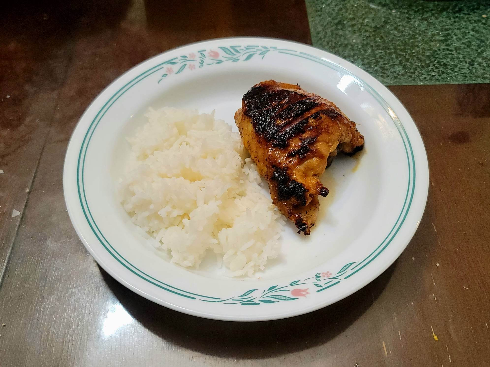

Chicken Inasal

Ingredients:
Marinade:
- 2 lb Chicken thighs, bone-in, skin-on
- 1 cup Cane vinegar
- 1/2 cup Kalamansi or Lemon juice
- 1 thumb Ginger, peeled
- 3 cloves Garlic
- 2 stalks Lemongrass, woody fibrous parts removed
- 2 tbsp Salt
- 1/2 tbsp Black pepper
- 1/4 cup Brown sugar
Chicken Achuete Oil:
- 500 g Chicken skin
- 1 1/2 cup Water
- 1 cup Oil
- 1/4 cup Annatto seeds
Basting Sauce:
- 3 tbsp Chicken achuete oil
- 5 tbsp Butter, melted
- 1/4 tsp Salt
- 1 tsp Kalamansi or Lemon juice
Instructions:
- Combine the marinade ingredients except for the chicken and place into a blender. Blend until smooth. Combine the chicken and the marinade and let marinate overnight.
- For the achuete oil, add the chicken skin and water to a pot. Bring to a boil and let cook for about 15 minutes or until almost all the water has evaporated and the fat is rendered. Then add in the oil and cook another 10 minutes or until crispy. Remove the skin from the pot and add in the annatto seeds. Cook for another 1-2 minutes. Then strain the oil and reserve.
- For the basting sauce, combine the ingredients and reserve.
- Remove the chicken from the marinade. Grill for about 3-5 minutes with the skin-side down. Then flip and cook for another 7-11 minutes or until completely cooked through. Let rest for a few minutes before serving.